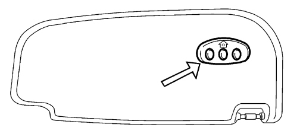
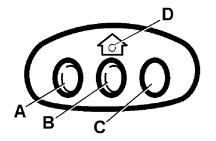
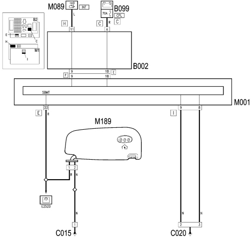

|


|
|
| Service News | ||
|
|
Alfa 159
all versions |
|
|||
| 0000 0 000 AA |
INTEGRATED SYSTEM FOR HOMELINK REMOTE CONTROLS
Main specifications - Network Information |
|||

|
Description
The integrated system for Homelink remote controls is a device that can be programmed to allow garage doors and gates to be opened remotely or to turn lighting and alarm systems on and off.
A single control unit located inside the vehicle, on the driver''s sun visor, makes it possible to replace up to three portable remote controls, maintaining the identical operation of the individual remote controsl replaced (for example, to activate the door simply press one of the three progrmmed buttons in Fig. 2 rather than the portable remote control).

|
Remind the customer that the vehicle should be within the operating range and that the key of the vehicle should be inserted in the ignition without starting up the engine. |
The HomeLink control panel (arrow - Fig. 1) and control unit are both housed in the sun visor.
Fig. 1

Programming
The programming is carried out directly on the control panel Fig. 2 by entering the frequencies/codes for the three portable remote controls proceeding as described below:
|
|
The system may be set to the frequencies/codes of most portable remote controls marketed in Europe. |
1) Press the outer buttons (A and C - Fig. 2) and keep them pressed; about 20 seconds later the LED D will start to flash, then release both buttons.
|
|
This operation is designed to delete the standard codes programmed by the manufacturer. This operation does not have to be repeated during the subsequent button programming. |
Fig. 2

2) Press the desired HomeLink button A or B or C and keep it pressed; do not release the button until operation 4 has been carried out.
3) When the HomeLink LED D begins to flash slowly (after approximately 20 seconds), move the portable remote control as close as possible to the HomeLink (keeping the key to be programmed pressed down)
|
|
The required distance between the portable remote control and the HomeLink depends on the system to be programmed (type of frequency of the gate, door or other system). If the LED D does not start flashing quickly the distance between the HomeLink and the portable remote control should be altered (moving them slightly further away). If the LED continues flashing slowly after a further 20 seconds the operation should be repeated altering the HomeLink-Remote control distance once again. |
4) The LED D for the HomeLink flashes, first slowly and then quickly. When the LED starts to flash quickly, release both buttons (HomeLink and portable remote control).
5) If necessary, programme the other two keys in a similar manner to the one described above.
Alternative codes
If the HomeLink system set as indicated above does not operate, this may be due to the fact that the original portable remote control is equipped with an alternative code.
To check whether the garage door or gate motor has an alternative code, proceed as follows:
-consult the garage door or gate motor manufacturer manual;-the portable remote control seems to have programmed the HomeLink but the garage door or gate can be neither opened nor closed;-press the programmed button and keep it pressed (A or B or C).With an alternative code system the LED D flashes rapidly briefly and then remains off for two seconds. This sequence is repeated for 20 seconds.
For the HomeLink to work properly it needs the programmed alternative code to be synchronized with the device system (door, gate or other) for this to take place:
-locate the setting button on the top part of the garage door or gate motor. The colour and position may vary depending on the manufacturer (consult the motor manual);-press the motor setting button (this normally activates the setting warning light). Carry out operation 2 (programming chapter) and start operation 3 within 30 seconds;-press the programmed button (A or B or C) and release it. Press the programmed button a second time and release it to conclude the operation.The motor should now be capable of recognizing the signal transmitted by the HomeLink and then open/close the door or gate.
| On some devices, the operation will possibly have to be repeated a third time to end the setting. |
Deleting HomeLink programmed buttons
To cancel the programming of all three keys simultaneously, proceed as follows:
-press the two outer buttons (A and C) and keep them pressed; about 20 seconds later the LED D will start to flash;-release both keys. | Remind the customer to delete the HomeLink programming if the car is sold to a new owner. |
Information for HomeLink Service
If you are unable to set up the HomeLink unit successfully after following the above instructions, contact Aftersales Service (HomeLink free hotline number 00800046635465) .
The following information must, however, be recorded beforehand:
-HomeLink software version;-HomeLink region code;-vehicle make and model, including year of manufacture and country of purchase;-make, model, age and frequency of use of the original portable remote control that the system needs to learn (if known). | Remind the customer that the freephone number cannot be used with all telephone service providers and an alternative number +49 6838 907-277 must be used at a charge (dialling this number constitutes an international call). |
To identify the HomeLink software version
Press key A or C (not both) and hold down for approximately 50 seconds.
LED D stops flashing and then goes off.
Continue to keep the button pressed, a few seconds later the LED will start to flash. The number of flashes corresponds to the number of the software version (for example: four flashes denotes version 4.0).
To identify the HomeLink region code
Press key B and hold down for approximately 50 seconds until LED D goes off.
Continue holding the key down, the led will resume flashing after a few seconds.
The number of flashes indicates the region set by the manufacturer, for example:
1 flash = rest of Europe
2 flashes = France
3 flashes = UK
4 flashes = Italy
Functional description
| It should be remembered that the supply for the device comes directly from the battery but through the SBMT function therefore the Body Computer continuously acquires the battery voltage signal to compare it with its own limit value (SBMT function): if the battery voltage measured is below the level, it intervenes via the CAN sending a signal to disable a series of loads including the HomeLink. |
On the basis of the battery voltage control logic (SBMT) described previously, the Body Computer M001 (Fig. 3) supplies the device M189, the remote control for activating gates/garage doors from pin 33 of connector E.
It is the same supply for the sun visor lights (G31 and G32) which are replaced by device M189
Fig. 3 - WIRING DIAGRAM

KEY
B002 Junction unit under dashboard
B099 Maxifuse box on battery
C015 Driver''s dashboard earth
C020 Passenger side dashboard earth
M001 Body Computer
M089 Steering lock control unit
M189 Gate/garage remote control